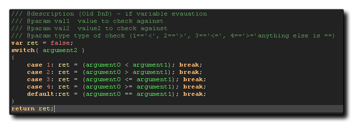

Si desea que sus scripts personalizados tengan finalización de código y para mostrar los argumentos requeridos, etc... en el editor de scripts, entonces necesita agregar algunos comentarios de estilo JSDoc. Si ha importado un proyecto creado con una versión anterior de GameMaker Studio, entonces puede haber visto comentarios como este en la parte superior del script de compatibilidad para la función: 
El formato para un encabezado de script típico sería tener la descripción de la función, el nombre de la función y luego enumerar los diferentes argumentos (parámetros) que toma la función, asegurándose de comenzar cada línea con una barra invertida triple "///" como que le dice a GameMaker Studio 2 que analice el comentario como JSDoc. Los comentarios en sí necesitan un identificador (precedido por "@") y contenido, y los identificadores disponibles son los siguientes:
| Identificador | Contenido |
|---|---|
| @function / @func | El nombre completo del script y los argumentos para la función " my_script(x, y, colour) ". |
| @description / @desc | Una descripción general de lo que hace el script. |
| @param / @arg / @argument | El tipo de argumento (opcional), incluido en {}, el nombre del argumento y una breve descripción (con un espacio entre ellos) |
Para tener una idea de cómo esto funcionaría al escribir sus propios scripts, tomemos este ejemplo básico:
// is_same_object(id, object)
if argument0.object_index == argument1
{
return true;
}
else return false;
Todo lo que hace este script es verificar si una instancia tiene el mismo object_index como un objeto dado y se llamaría simplemente como:
if is_same_object(id, obj_Player)
{
instance_destroy()
}
Sin embargo, escribir eso en el editor de scripts no le mostrará los argumentos ni le dará ninguna ayuda cuando lo use, por lo que debemos agregar una descripción, un nombre de función y los argumentos como JSDoc comenta de esta manera:
/// @function is_same_object(id, object)
/// @description Compare an instance object index with that of
another.
/// @param {real} instance_id The unique instance ID value of the
instance to check.
/// @param {real} object_index The object index to be checked
against.
if argument0.object_index == argument1
{
return true;
}
else return false;
Ahora, cuando llame a este script en cualquier lugar, obtendrá autocompletar y ayuda con los argumentos, etc. 
En la imagen de arriba, la parte superior muestra la función en el autocompletado y la parte inferior muestra cómo funciona el argumento auxiliar en la parte inferior. Es importante tener en cuenta que cuando usa el @function identificador, entonces el nombre del script que usted presente aparecerá en el IDE de la misma manera que el nombre del script en el árbol de recursos. Por lo tanto, puede asignarle un nombre al script en el árbol de recursos y nombrarlo como otro que use @function y el IDE reconocerá ambos como alias del mismo recurso de script, pero solo el @function uno tendrá autocompletar, etc.
Tenga en cuenta que tanto el "tipo" opcional como las partes "descriptivas" obligatorias de @param no se muestran por defecto en el código IDE completo, y para verlos debes activar las opciones en las Preferencias de GML.